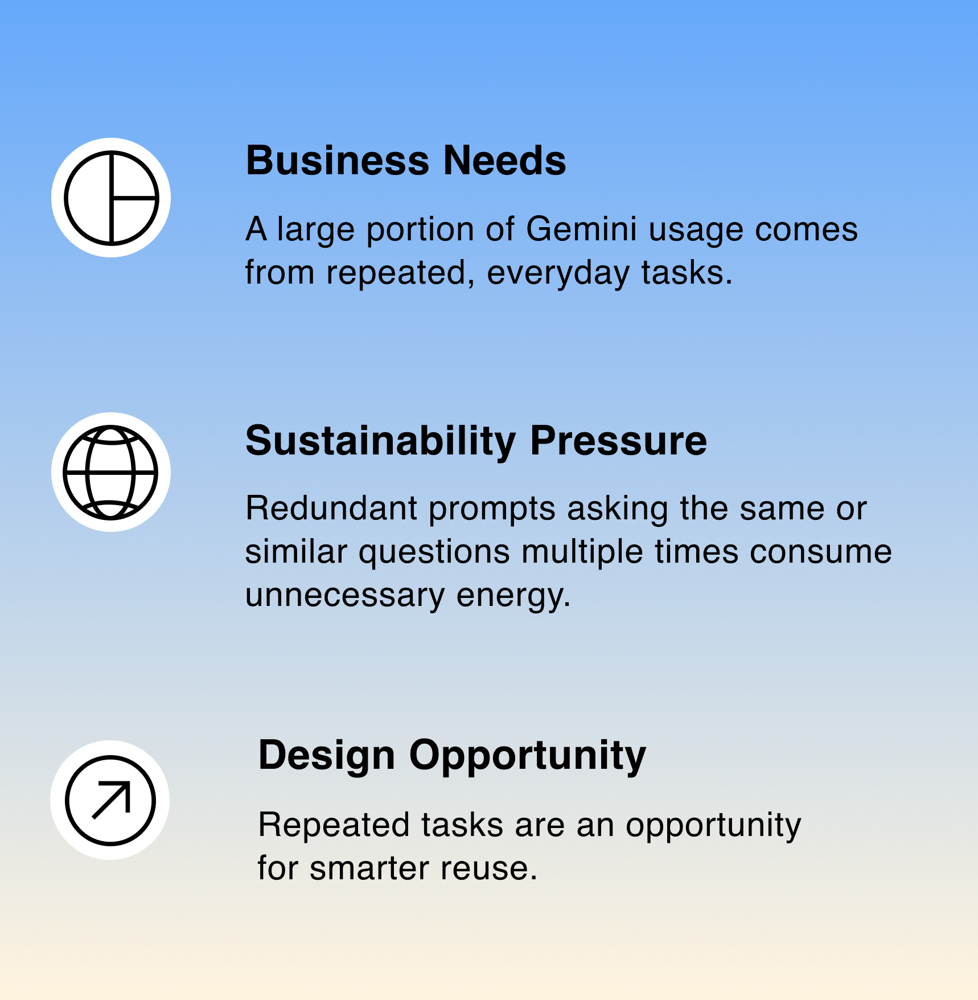
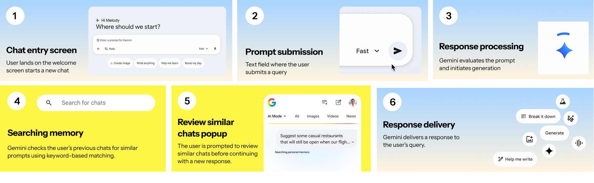

Adaptive Intelligence
How can the use of LLMs be optimized through user behavior?
Most users default to starting a new chat rather than revisiting previous conversations. At Google scale, this creates billions of similar conversations with overlapping intent, repeated AI generation without added user value.
This project explores how interaction design in Gemini can reduce that waste by surfacing relevant past conversations before generating new responses.
Users restart instead of rediscovering
Many users default to starting a new chat rather than revisiting previous conversations. This creates many similar conversations with overlapping intent. At Google scale, small inefficiencies repeat billions of times.
Repeated AI generation without added user value is a sustainability and efficiency problem hiding in plain sight. Improving how users rediscover existing conversations aligns directly with Google's strength and mission.
Re-discovery before generation
A search-first layer inside Gemini that routes simple, factual, and repeatable queries to keyword-based retrieval before invoking full chat intelligence. Before generating a new response, Gemini checks previous chats for similar prompts and surfaces them to the user.
A standard Gemini query costs 0.24 Wh. Indexed keyword matching over existing chats costs 0.001–0.01 kWh, orders of magnitude less. By routing familiar queries to retrieval first, the intervention reduces redundant generation and surfaces answers the user already has.
The energy cost of repeated queries
A single standard Gemini query consumes 0.24 Wh, roughly 10x the energy of a Google Search. Across 2B+ daily queries, that adds up quickly. 100 Gemini queries consume approximately 24 Wh: enough to drive 450 feet, toast 2 slices of bread, or stream Netflix for 15 minutes.
A large portion of Gemini usage comes from repeated, everyday tasks. Redundant prompts asking the same or similar questions multiple times consume unnecessary compute and energy. Repeated tasks are an opportunity for smarter reuse, and a well-placed design intervention can shift that behavior at scale.
100 Gemini queries ≈ ~24 Wh of electricity.


Multiplied across billions of daily queries, those tiny per-prompt costs add up to a meaningful sustainability burden, one that interaction design can directly help reduce.
How people actually use Gemini
To ground the intervention in real behavior, I combined user interviews, a system map of the existing flow, and a synthesis of recurring patterns.

I spoke with regular Gemini users about how they start, return to, and abandon conversations. A consistent pattern surfaced: when a prompt felt familiar, the easier move was always to start fresh rather than search through chat history.
Mapping the existing flow exposed where redundant generation happens, most often at the very first step, when a new chat is opened instead of an existing one being reopened. That moment became the target for the intervention.


Three behaviors surfaced consistently across the research: users repeat the same tasks daily, restart instead of continuing past chats, and forget which answers they already have. Each one points to the same opportunity for re-discovery before generation.
From research to intervention
I storyboarded the full interaction end to end, mapping each screen the user moves through from prompt to response. The first three steps cover the existing Gemini flow: a user lands on the welcome screen, submits a query, and waits while Gemini processes the prompt.
The intervention lives in the next two steps. Before generating a new response, Gemini searches the user's previous chats for similar prompts using keyword matching, then surfaces those past chats in a popup so the user can confirm whether one of them answers the question. Only when no match is useful does the flow continue to the final step and generate a new response.
The two highlighted yellow frames are the heart of the intervention. They turn the moment of "new prompt" into a moment of re-discovery, removing redundant generation without changing what the user already does.

Next Steps
Test with real usage data to better measure the impact of search-first retrieval on redundant query reduction.
Expand keyword-matching to semantic similarity so the intervention catches conceptually related prompts, not just exact repeats.
Evaluate adoption patterns across different Gemini surfaces, standalone chat, Workspace, and embedded contexts, to understand where the intervention has the greatest effect.
Takeaways
Interaction decisions have sustainability impact
Individual design choices, where a button lives, what a prompt says, can influence behavior at a scale that translates into measurable energy savings. Sustainability in AI is not just an infrastructure problem; it is a design problem.
Behavior change starts with meeting users where they are
Users restart conversations not out of laziness but because rediscovery is harder than restarting. The right intervention does not ask users to change their habit, it makes the better option feel easier and more obvious than the default.
Efficiency and experience are not in conflict
A search-first layer does not degrade the experience, it improves it by surfacing what users already found useful. Efficiency and helpfulness point in the same direction when the design is grounded in how people actually use the product.